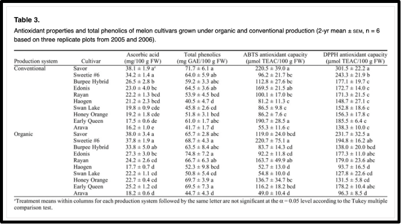
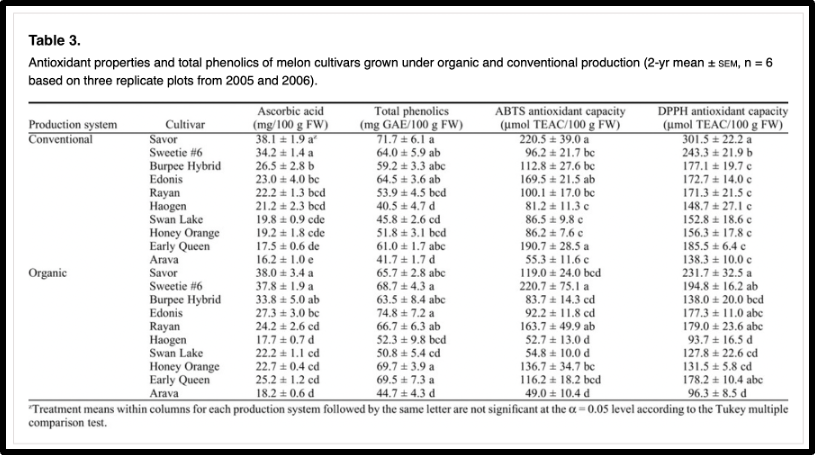

He trobat diferents articles científics que estudien el meu tema i els trobareu a continuació:
 

Els resultats obtinguts en aquest estudi han demostrat que; la diferència nutricional es significativament important només pel contingut d'àcid ascòrbic (vitamina C), que es troba en major quantitat als melons de cultiu orgànic respecte als convencionals.
El resultat indica que el cultiu orgànic de meló és més eficient i rendible per als agricultors a causa del seu major valor de mercat.

En aquest estudi, els cultius orgànics van mostrar un contingut més alt de fòsfor i matèria seca i un contingut més baix de nitrogen i nitrats que els cultius convencionals.